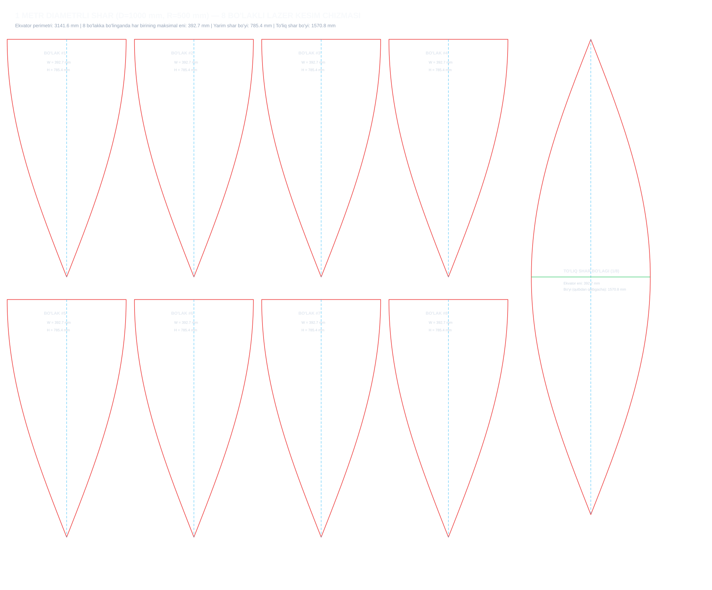

Shar diametri: 1000 mm (Radiusi R = 500 mm) | Sektorlar soni: 8 ta lepestok
Qo'lda chizish yoki tekshirish uchun har 50 mm dagi eni va markazdan siljishi:
| Balandlik (y) | Burchak (φ) | To'liq Eni (W) | Yarim Eni (±X) |
|---|---|---|---|
| 0.0 mm | 0.0° | 392.70 mm | ± 196.35 mm |
| 50.0 mm | 5.7° | 390.74 mm | ± 195.37 mm |
| 100.0 mm | 11.5° | 384.87 mm | ± 192.44 mm |
| 150.0 mm | 17.2° | 375.16 mm | ± 187.58 mm |
| 200.0 mm | 22.9° | 361.70 mm | ± 180.85 mm |
| 250.0 mm | 28.6° | 344.63 mm | ± 172.31 mm |
| 300.0 mm | 34.4° | 324.11 mm | ± 162.05 mm |
| 350.0 mm | 40.1° | 300.35 mm | ± 150.18 mm |
| 400.0 mm | 45.8° | 273.60 mm | ± 136.80 mm |
| 450.0 mm | 51.6° | 244.11 mm | ± 122.05 mm |
| 500.0 mm | 57.3° | 212.18 mm | ± 106.09 mm |
| 550.0 mm | 63.0° | 178.13 mm | ± 89.06 mm |
| 600.0 mm | 68.8° | 142.30 mm | ± 71.15 mm |
| 650.0 mm | 74.5° | 105.05 mm | ± 52.52 mm |
| 700.0 mm | 80.2° | 66.75 mm | ± 33.37 mm |
| 750.0 mm | 85.9° | 27.78 mm | ± 13.89 mm |
| 785.4 mm | 90.0° | -0.00 mm | ± -0.00 mm |
